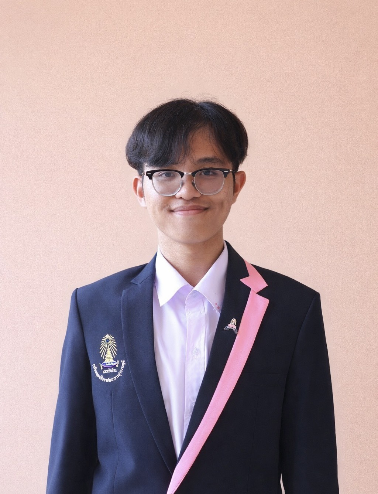
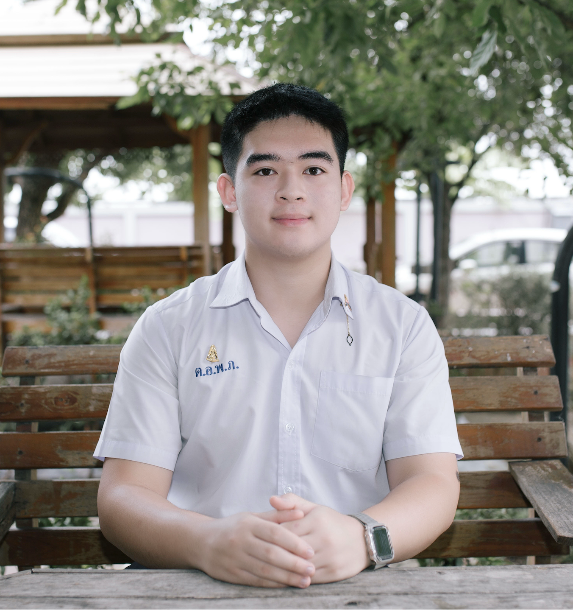
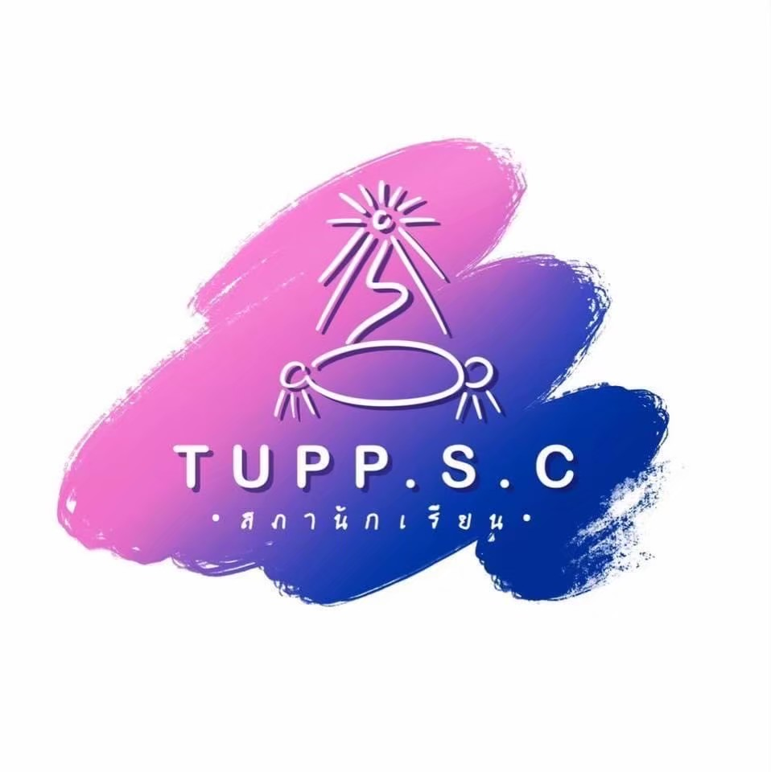
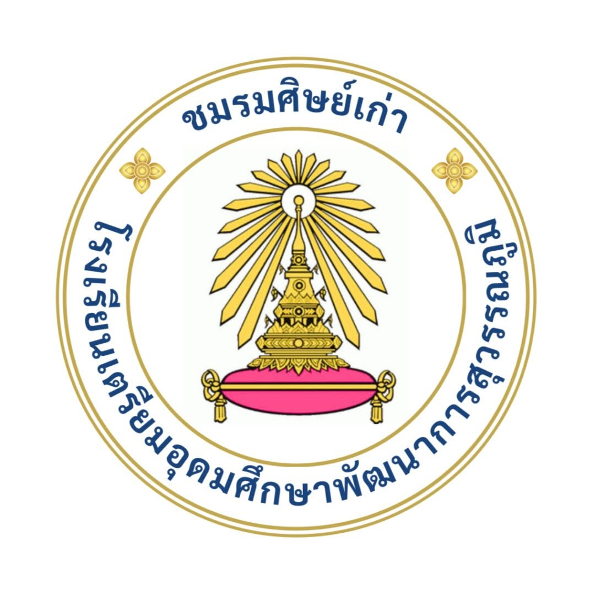

โครงการเตรียมตัวดีมีที่เรียน (TUPP Portfolio)
สื่อกลางรวบรวมแฟ้มสะสมผลงานและแนวทางศึกษาต่อระดับอุดมศึกษา จากรุ่นพี่เตรียมอุดมศึกษาพัฒนาการสุวรรณภูมิ
ทีมผู้พัฒนาเว็บไซต์

นายร่มธรรม แท่นแก้ว
ประธานนักเรียน ประจำปีการศึกษา 2567
รองประธานชมรมศิษย์เก่า ฝ่ายสื่อสารองค์กร
ผู้จัดทำ

นายเจตต์นิภัทธ์ เบ็ญจมิตรกุล
หัวหน้าฝ่ายพัฒนาสารสนเทศ ประจำปีการศึกษา 2568
ผู้จัดทำ
คณะกรรมการสภาสภานักเรียน (TUPP Student Council)
ผู้ริเริ่มโครงการและรวบรวมข้อมูลประสานงานกับนักเรียนรุ่นพี่

คณะกรรมการสภานักเรียน
ผู้ประสานงานหลัก
ชมรมศิษย์เก่า (TUPP ALUMNI)
ขอขอบคุณการสนับสนุนจากชมรมศิษย์เก่าเตรียมอุดมศึกษาพัฒนาการสุวรรณภูมิ

ชมรมศิษย์เก่า
ผู้สนับสนุนโครงการ
ขอขอบคุณ 🙏
- งานแนะแนว โรงเรียนเตรียมอุดมศึกษาพัฒนาการสุวรรณภูมิ
- รุ่นพี่ TUPP ทุกท่านที่ร่วมแบ่งปันผลงาน